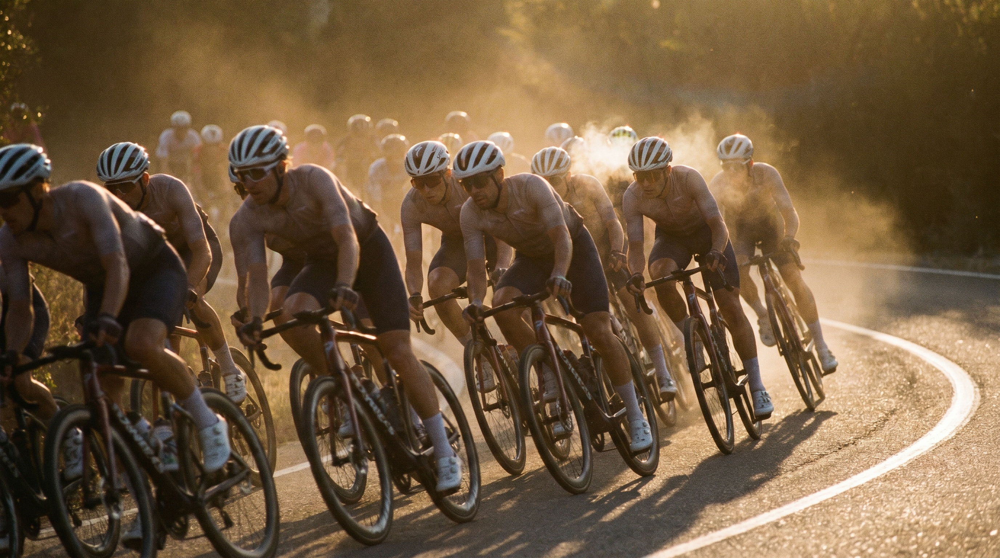
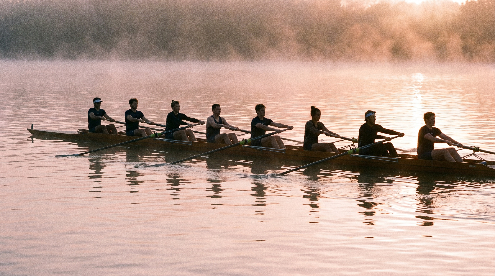
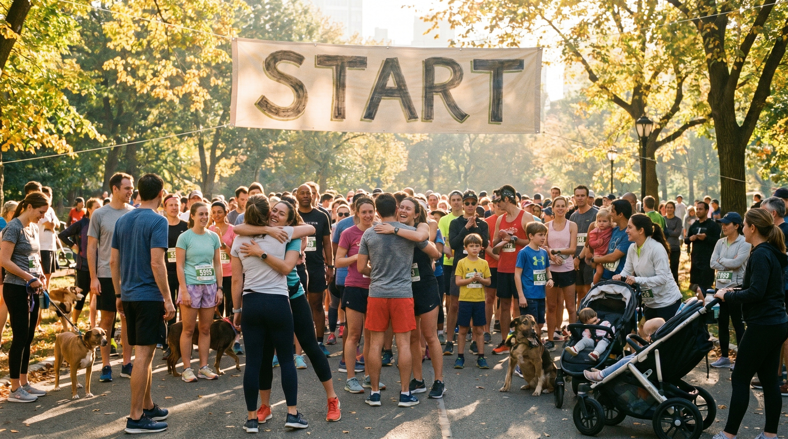
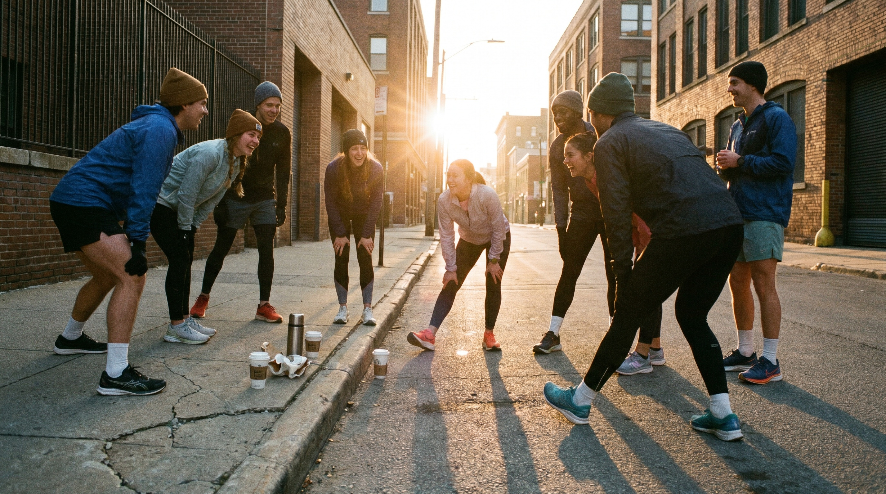
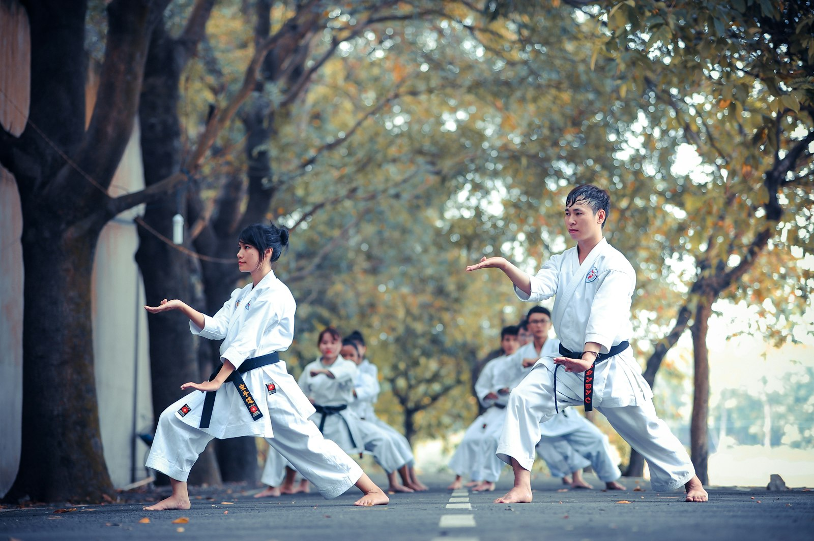
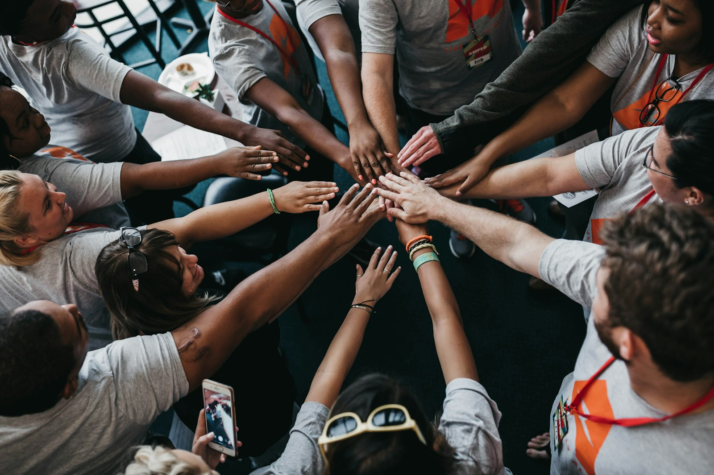

Every spring, tens of thousands of people line up to run the London Marathon, and most of them have no business finishing it. About half are first-timers. A good number have never run anywhere near 26.2 miles in their lives. By any honest assessment of training and physiology, a lot of them should fold somewhere around mile 18.
Almost none of them do. At the big city marathons, 97 to 99 percent of the people who start, finish. They cross a line they had no real chance of reaching, and if you ask them afterward how, they rarely talk about their training plan. They talk about the stranger who ran beside them for three miles, the crowd screaming their name off their bib, the person ahead they refused to lose. They were carried.
That is the whole idea of this piece, and I think it is the most underrated fact in health. The hardest things we try to do with our bodies, move more, eat better, drink less, sleep right, keep going, get dramatically easier the moment we stop doing them alone. Not a little easier. Categorically easier, in ways you can measure in the blood and the brain. We treat health as a solo project, a matter of discipline and willpower and the right information. It was never meant to be solo, and the evidence that it works better together is overwhelming and mostly ignored.
WHY WE FAIL alone
Start with why the solo version fails so reliably, because it is not the reason we tell ourselves.
We blame information or willpower. We did not know the right thing, or we knew and could not make ourselves do it. But almost nobody skips the gym because they were unaware that exercise is good. The knowledge was never the bottleneck. Something quieter is.
The cleanest account of that something I have found comes from the cognitive scientist John Vervaeke, reading Plato in his series Awakening from the Meaning Crisis. Plato split the mind into parts.
THE THREE-PART MIND — IT'S 9PM AND THERE'S CAKE IN THE FRIDGE. TAP EACH VOICE TO HEAR IT. THE GAUGE SHOWS HOW LOUDLY IT SPEAKS IN THAT MOMENT.
The problem is one of range. Reason knows the right answer, but it is abstract and far away, and abstract and far away is weak in the moment. Appetite is loud, immediate, and usually wins, because what is vivid beats what is true. Knowing, in other words, is the weak force in the room.
WHAT IS vivid BEATS WHAT IS true
But the third part, the social self, sits close enough to the moment to actually move you, and it answers to other people. And that turns out to be more than a metaphor. You can measure it in how the world physically looks. In a now well-known experiment, people were asked to stand at the foot of a hill and judge how steep it was. Those standing next to a friend estimated the slope to be 10 to 20 percent less steep than those standing alone, even when the friend stayed silent and faced the other way. Merely asking people to picture a supportive person produced the same softening, and the closer the friendship, the gentler the hill appeared.
THE HILL EXPERIMENT — SAME HILL, DIFFERENT EYES
AS IT LOOKS WITH NOBODY BESIDE YOU.
You can measure it deeper down, too. In a landmark fMRI study, married women braced for a mild electric shock while their brains were scanned. When they held their husband's hand, the threat-related activity in their brains dropped sharply. Holding a stranger's hand helped less, and the happier the marriage, the greater the calming. The fear was the same. The presence of someone who mattered turned down the body's response to it.
Psychologists have a name for what links these findings. They call it social baseline theory, and the claim is quietly radical: the brain's default assumption is that other people are nearby, and it budgets its effort accordingly. Company is not the bonus. Being alone is the costly exception, the state in which the brain has to spend more of its own resources to face the same hill and the same shock. We are not built to do this by ourselves, and the body keeps the receipts.
Sit with that, because it is stranger than it sounds. The hill did not change. The eyes did. The brain appears to treat social support as a physical resource, the same way it treats being rested or fit, and folds it straight into how hard a task looks before you have taken a single step. Other people do not just cheer you up the slope. They lower the slope.
Which reframes the whole problem. We treat doing it alone as the normal way, and other people as a bonus. It is the other way around. Going it alone means facing every hill at its full, unsoftened steepness, with the one tool evolved to shrink it left at home.

THE BODY GOES further IN A GROUP
Watch a cycling peloton and you can see the next thing a group does for the individual, plain as physics. A rider tucked into the pack is not working nearly as hard as the rider on the front. Drafting behind others cuts a cyclist's energy cost by roughly 30 to 40 percent, and deep inside a large, tightly packed peloton the sheltered riders can be doing a fraction of the work a solo rider faces at the same speed. The result is that a rider who could never hold 45 kilometers an hour alone holds it easily in the group. The pack literally carries the individual. Researchers who study pelotons describe them as a kind of superorganism, a single system that lets its weakest members move faster than their own legs would ever allow.
INTERACTIVE — DRAFTING, OR: BORROWED WATTS
Most of what we do together is not aerodynamic, but the carrying still happens, through a different mechanism. When we exert ourselves alongside other people, the body reads the situation as safer and changes what it does with pain. In a now-classic Oxford study, rowers' pain thresholds rose significantly higher after training as a crew than after the exact same workout done alone, with no difference in how hard they worked. Moving in sync with others appears to ramp up the endorphin release on its own. People describe a kind of social high after a hard class or a long group run, and that is not poetry, it is chemistry.

Then there is the simple matter of how hard you try. Put someone next to a slightly stronger partner whose effort the team depends on, and they push harder and last longer than they would solo. Psychologists call this the Köhler effect, and it has been replicated again and again: people holding a plank or pedaling a bike persist significantly longer when their performance matters to a partner than when they are on their own. Nobody wants to be the weak link, and that small social pressure converts directly into more minutes, more reps, more effort.
THE KÖHLER EFFECT — HOLD A PLANK. NOBODY WANTS TO BE THE WEAK LINK.
REPLICATED AGAIN AND AGAIN: PEOPLE PERSIST SIGNIFICANTLY LONGER WHEN A PARTNER DEPENDS ON THEM.
Lower cost, less pain, more effort. Before a single word is exchanged about motivation or accountability, the presence of other bodies has already changed what yours is willing and able to do.
EVEN EATING AND sleeping
If the effect stopped at the gym it would be one thing. But it reaches past the gym entirely, into eating and sleeping, the most ordinary, everyday things we do with our bodies.
Eating is barely a solo act. People who share more of their meals are happier, more trusting and better supported, and the analysis points from the shared meal to the bond, not the reverse. The 2025 World Happiness Report found the same pattern across cultures, with shared meals tracking closely to wellbeing, and teenagers who eat with their families showing better diets and less disordered eating. It is also what makes eating well actually hold. Changing how you eat is one of the hardest habits to keep, and what decides whether it survives is less the plan than the people around it: in a classic trial, people who joined a weight-loss program alone kept the change about a quarter of the time, while those who joined with friends and support held it at two-thirds. Same diet, same advice, nearly triple the staying power, from nothing but company. The language knew it long before the science did: companion comes from the Latin for the person you share bread with.
Even sleep, the one thing you do unconscious and alone, depends on who is there. In a sleep-lab study, couples sharing a bed got around 10 percent more REM sleep, less broken up, with their sleep stages syncing through the night, and the effect was strongest in the people with the least support elsewhere in their lives. The body, sensing it is not keeping watch alone, finally lets all the way down.
AND IT ACTUALLY sticks
Getting through one hard session is the easy part. The deeper problem in health is the other 364 days, the staying. This is where going alone really falls apart, and where other people do their most important work.
The numbers are stark. In a meta-analysis of 122 studies, people with strong, practical support around them stuck to a health regimen about 1.7 times more reliably than those without it, and those in conflict-ridden, unsupportive settings did markedly worse. Support was not a mood booster. It was one of the largest predictors of whether people actually did the thing, week after week. And the behaviors themselves travel through our relationships. Tracking thousands of people across three decades of the Framingham Heart Study, researchers found that when a person's friend became obese, their own odds rose by more than half. Habits, good and bad, move person to person like weather.
FRAMINGHAM, 30 YEARS — HABITS MOVE PERSON TO PERSON LIKE WEATHER. TAP A NODE.
EVERY DOT IS A PERSON. EVERY LINE IS A FRIENDSHIP.

You can watch this play out in the institutions that actually keep people moving, and the pattern is always the same. The ones that work are built on belonging, not willpower.
Parkrun is the cleanest example. A free, weekly, timed five kilometers in a park, now running in 23 countries with over seven million registered participants and the unofficial motto that no one finishes last. What is striking is not the running, it is the durability. When researchers mapped the social networks at parkrun events, they found a tightly connected core that persisted over time even as individual members came and went. The community outlasts the runners. People keep coming back not for the 5k but for the people, and the coffee after, which is exactly why doctors in the UK now prescribe parkrun as a form of social medicine.
The same logic runs through everything that successfully holds people. CrossFit members report a far stronger sense of community and belonging than people at conventional gyms, and that belonging, the named class, the people who notice when you do not show up, is what its devotees credit for keeping them coming back. Obstacle races go further and build the dependence into the course itself. A Spartan or Tough Mudder course is designed so that some walls are impossible to clear without strangers stopping to haul you over, and Tough Mudder's founder pitched the whole format as an antidote to the lonely monotony of running by yourself. Even the quietest end of health works this way. In an NHS yoga-on-prescription programme, what kept people practicing was not the postures but the social connectedness they had not expected to find, the simple fact of doing it in a room full of other people.
BUILT ON belonging, NOT WILLPOWER
Step back and one finding sits underneath all of it, the one that should reframe how we think about health entirely. In a meta-analysis of 148 studies covering over 300,000 people, the strength of someone's social relationships predicted their survival about as powerfully as whether they smoked. Connection is not a nice extra on top of a healthy life. By the numbers, it is one of the most powerful health interventions we have. And no panel measures it, no plan prescribes it.

WHY A GENERATION IS rediscovering IT
The most visible proof of all this is not in a journal. It is on the street on a Saturday morning, and it belongs to the young.
Something is shifting in how a generation gathers. Run clubs have quietly become the new nightlife, and in many cities the new dating app too, a place to meet people that does not run on alcohol. Sober-curious events are booming. One platform reported a 92 percent rise in sober-curious events in a single year, from morning dance parties to coffee-fueled DJ sets. And it sits on top of a real, long-running decline in young-adult drinking. Between 2011 and 2023, the share of 18 to 24 year olds who drink fell by eight percentage points, making the young the driving force behind falling alcohol consumption.
DRAG — THE DEFAULT SETTING FOR BEING SOCIAL
CALL a drink, in a dark room, at night
LINE a workout, in a bright one, in the morning
It would be easy, and wrong, to call this generation simply sober. They are not. A 2026 industry study found Gen Z drinking actually ticked back up as the cohort aged and earned more. The honest read is not that young people quit drinking. It is that they stopped letting the bar be the only place to gather. The format is what changed. The default setting for being social used to be a drink in a dark room at night. Increasingly it is a workout in a bright one in the morning. They swapped the last call for the start line.
Some of the fastest-growing of these gatherings are also the oldest. Sauna and cold-plunge clubs have spread out of the Nordic countries into cities everywhere, groups of near-strangers sweating and shivering together at dawn. It looks like a wellness fad, but communal sweating is one of humanity's most enduring social rituals, from the Finnish sauna, now on UNESCO's heritage list, to the Russian banya, the Turkish hammam and the Japanese bathhouse. The cold plunge is new packaging on a very old human instinct, to endure something intense together and come out bonded.
Why now is the more interesting question. A few forces seem to push the same way. This is the loneliest stretch in modern memory, a generation that came of age through screens and a pandemic and is starved for the thing a phone cannot give, a room full of actual people. The apps that promised to connect us turned socializing into a solitary scroll, and the bar, once the default place to meet someone, got quietly replaced by a swipe. What is left is a hunger for the physical, synchronous, slightly uncomfortable experience of doing something hard next to strangers and coming out the other side bound to them. Movement turned out to be the easiest excuse to manufacture exactly that.
CONNECTION IS THE product. HEALTH IS THE side effect.
Which is the tell. What this generation is really chasing is not a lower resting heart rate. It is each other. The run, the plunge, the class, the rave, these are the cover story. The point is the people, and the health is a side effect, a very good one.
THE OLDEST technology WE HAVE

THE DOJO
THE TEAMNone of this is new. We are not inventing something so much as remembering it.
For almost all of human history, health was never a solo pursuit, because survival itself wasn't. People moved in hunting parties and harvest crews, ate at full tables, marked the seasons in congregations and the milestones in ceremony, recovered on the shared bench of the bathhouse. The dojo, the team, the choir, the walking group, every durable human institution for becoming stronger or calmer or steadier understood the same thing in its bones, that we are changed most reliably in the company of others. The modern experiment, the home gym, the solo tracker, the plan optimized for an audience of one, is the strange anomaly. And by most honest measures it has not worked. We have never had more information about our bodies, and it has arguably made acting harder, not easier. As one physician put it, reflecting on the boom in self-ordered testing, people expect either a clean bill of health or a clear diagnosis, when what they usually get is something indeterminate that causes anxiety without improving their health.
The evidence all points one way. The body goes further drafting in a pack. Pain eases when you move in time with other people. Hills look smaller with a friend beside you. Habits hold when someone would notice you breaking them. You live longer, measurably, with people around you. Put it together and the most effective piece of health advice is also the least clinical, and the least likely to come from an app or a panel.
Find your people. Join the club, the class, the crew. Sign up for the thing you cannot finish alone, precisely because you cannot finish it alone. The plan matters far less than the room. We spent a decade trying to optimize our way to health in private, and quietly proved that the oldest method still beats it.
THE THESIS, ONE LAST TIME